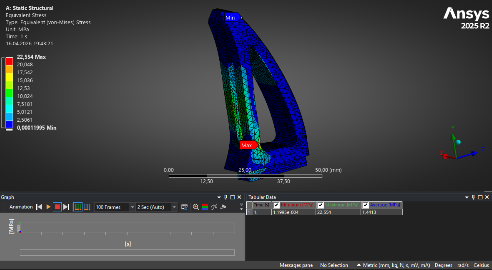

CAE | Mechanical Design | FEA | SolidWorks | ANSYS
I am a mechanical engineer with a strong interest in CAE, mechanical design, simulation, robotics, and automation. This portfolio presents selected projects focused on 3D design, structural analysis, and engineering problem-solving.
Designed a robotic gripper concept in SolidWorks and evaluated critical load-bearing regions using finite element analysis. The study focused on stress concentration zones, deformation behavior, and geometry improvement potential.

This project focused on the structural optimization of a robotic gripper finger using static and fatigue finite element analysis. The baseline geometry was evaluated under a 300 N load, and the highest stress concentration was identified at the inner load-path root region. A second design iteration introduced local slot-corner relief fillets and increased the critical root fillet radius to smooth the stress flow. Compared with the baseline, the final design reduced peak von Mises stress by 13.5%, equivalent elastic strain by 13.9%, and total deformation by 3.2%. Fatigue analysis under zero-based cyclic loading (0–300 N) showed that both designs remained in the high-cycle regime, but the optimized version improved the minimum fatigue safety factor by 15.7%. The study demonstrates how small local geometry refinements can meaningfully improve structural response without changing the overall load case.
Tools: SolidWorks, ANSYS Mechanical
Created a mechanical part model and assessed its performance under load conditions. The project included CAD modelling, simulation setup, result interpretation, and design evaluation based on stress distribution.
Tools: SolidWorks, ANSYS